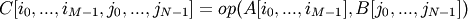

numpy.ufunc.outer¶
- ufunc.outer(A, B)¶
Apply the ufunc op to all pairs (a, b) with a in A and b in B.
Let M = A.ndim, N = B.ndim. Then the result, C, of op.outer(A, B) is an array of dimension M + N such that:

For A and B one-dimensional, this is equivalent to:
r = empty(len(A),len(B)) for i in xrange(len(A)): for j in xrange(len(B)): r[i,j] = op(A[i], B[j]) # op = ufunc in question
Parameters : A : array_like
First array
B : array_like
Second array
Returns : r : ndarray
Output array
See also
Examples
>>> np.multiply.outer([1, 2, 3], [4, 5, 6]) array([[ 4, 5, 6], [ 8, 10, 12], [12, 15, 18]])
A multi-dimensional example:
>>> A = np.array([[1, 2, 3], [4, 5, 6]]) >>> A.shape (2, 3) >>> B = np.array([[1, 2, 3, 4]]) >>> B.shape (1, 4) >>> C = np.multiply.outer(A, B) >>> C.shape; C (2, 3, 1, 4) array([[[[ 1, 2, 3, 4]], [[ 2, 4, 6, 8]], [[ 3, 6, 9, 12]]], [[[ 4, 8, 12, 16]], [[ 5, 10, 15, 20]], [[ 6, 12, 18, 24]]]])